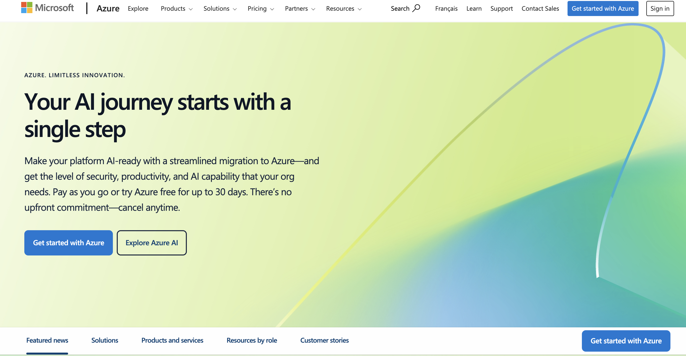
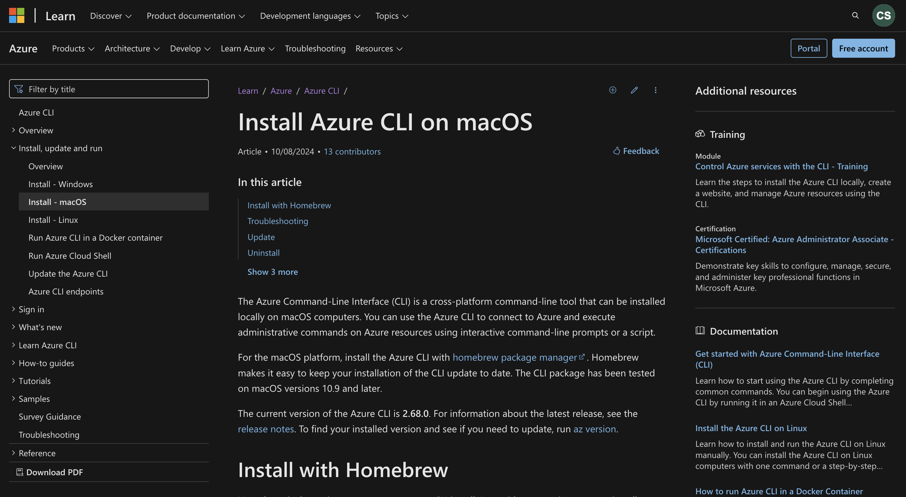
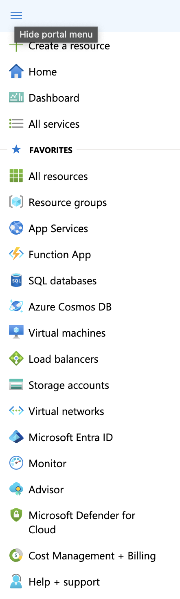
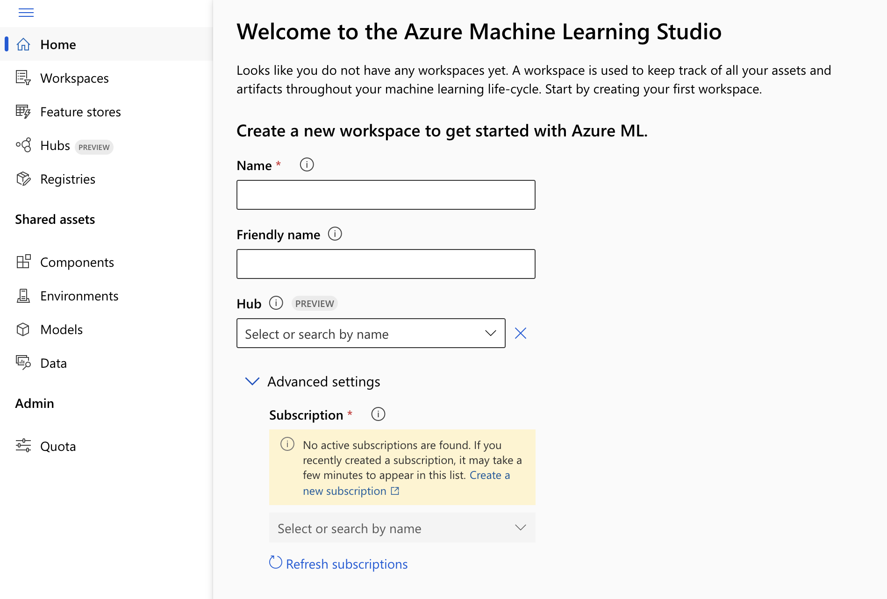

Getting started with Microsoft Azure for Data Science projects
1 Introduction
Cloud computing has transformed the data science by providing scalable, flexible, and powerful tools to handle large datasets, build complex models, and deploy applications. Microsoft Azure is a leading cloud computing platform that offers a wide range of services for data scientists. From scalable storage to automated machine learning, Azure simplifies the entire data science workflow.
In this blog, I will guide you step-by-step on how to set up your Azure environment, store data, train a machine learning model, and deploy it for real-world use. Whether you’re just getting started or looking to streamline your data science projects, Azure provides all the tools to make your workflow more efficient and effective.
This guide covers both code-based and no-code methods to build and deploy machine learning models on Azure. If you’re eager to dive into coding for full control or prefer a visual, drag-and-drop interface to get started quickly, Azure has you covered. You’ll learn how to manage data, train models, and deploy solutions—step-by-step.
Having used Azure in my previous role as a data scientist intern, I can confidently say it has modernized our data workflows and accelerated model deployment in team projects. Azure’s flexibility allowed us to scale infrastructure according to project demands and seamlessly integrate machine learning models into production environments.
2 Why choose Azure for Data Science?
Azure stands out as a top cloud platform for data science due to its scalability, integration with popular data science tools, and machine learning services.
Scalability and Flexibility: Azure’s infrastructure allows you to scale computing resources up or down based on your project’s needs. This flexibility ensures that you only pay for what you use, making it cost-efficient for both small experiments and large-scale deployments.
Integration with Tools: Azure seamlessly integrates with Python, R, Jupyter Notebooks, and other popular data science tools, making it easy for data scientists to transition from local development to cloud-based workflows.
Services: Key Azure services like Azure Machine Learning, Blob Storage, and Databricks simplify complex workflows. Azure also offers tools like Azure Data Factory for pipeline automation and Azure Cognitive Services for AI-driven applications.
Let’s start by setting up Azure to begin your data science journey.
3 Set Up Azure
Getting started with Azure is simple. If you don’t already have an Azure account, follow these steps:
3.1 Sign Up
- Visit the Azure Website.

Click on “Start Free” to begin the sign-up process. (Note: Credit card information is required to try the free version of Azure.)
Sign in with your Microsoft account or create a new one if you don’t have one.
Azure’s free account allows you to experiment and build solutions for one month as long as your credits last.
Learn More: Billing and subscription documentation
3.2 Install Azure CLI
Azure CLI (Command-Line Interface) is a tool that allows you to manage Azure resources directly from your terminal. It simplifies the process of interacting with Azure services without needing to navigate the web portal.
3.2.1 Download and Install Azure CLI
- Go to the Azure CLI Installation Page.

- Choose the installation option based on your operating system (Windows, macOS, or Linux).
- Follow the step-by-step instructions provided on the page.
3.2.2 Verify Installation
After installation, open your terminal and run:
az --versionIf the installation was successful, this command will display the installed Azure CLI version.
3.2.3 Sign In to Azure
Once Azure CLI is installed, sign in to your Azure account:
az loginA browser window will open prompting you to log in with your Azure credentials. After logging in, the CLI will display your subscription details. Azure CLI makes it easier to create and manage Azure resources efficiently, saving time and simplifying workflows.
With Azure CLI ready, let’s create a Resource Group to organize your project resources. This will help you efficiently manage and group related services, ensuring a smooth and organized workflow throughout your data science project.
4 Create a Resource Group
A Resource Group in Azure is a container that keeps resources such as storage accounts, virtual machines, and databases. It helps keep your project organized and makes it easier to manage resources.
Although you can create a Resource Group using the Azure CLI, in this guide, we’ll use the Azure Portal for a more visual and beginner-friendly experience.
4.1 Create a Resource Group via Azure Portal
Go to the Azure Portal.
In the search bar at the top, type “Resource Groups” and click on it or click on the hamburger menu at the top left.

Click the “+ Create” button to start creating a new Resource Group.
Fill in the details:
- Subscription: Select your Azure subscription.
- Resource Group Name: Enter a name for your resource group.
- Region: Choose a region close to you.
- Subscription: Select your Azure subscription.
Click “Review + Create” and then “Create” to finalize.
4.2 Verify the Resource Group
Once the deployment is complete, you’ll be redirected to the Resource Group overview page where you can manage your resources.
- Learn more: Azure Resource Groups
The next step is to set up our Azure Storage to manage the project’s data.
5 Configure Azure Storage
Azure Blob Storage is a solution for storing large files, datasets, and backups. It offers integration with other Azure services, making it an excellent choice for managing unstructured data in data science projects. Its scalability, security, and cost-effectiveness make it ideal for growing projects.
5.1 Create a Storage Account
A Storage Account in Azure allows you to access Blob Storage and other storage services.
- Go to the Azure Portal if you’re not already signed in.
- In the search bar, type “Storage Accounts” and click on it.
- Click on “+ Create” to start a new storage account.
Fill in the details:
- Subscription: Select your Azure subscription.
- Resource Group: Choose the Resource Group you created earlier.
- Storage Account Name: Enter a unique name using lowercase letters only.
- Region: Select the same region as your Resource Group for better performance.
- Performance: Keep as Standard for general use.
- Redundancy: Choose Locally-redundant storage (LRS) for cost-effective redundancy.
- Click “Review + Create”, then click “Create” to deploy the storage account.
Learn More: Create a Storage Account
5.2 Upload Data to Blob Storage
Once your storage account is ready, you can upload data to Blob Storage.
- In the Azure Portal, go to your Storage Account.
- Under Data storage, click “Containers”.
- Click “+ Container” to create a new container.
- Name: Enter a name for your container.
- Public Access Level: Set to Private (no anonymous access) for security.
- Name: Enter a name for your container.
- Click “Create”.
5.3 Upload Files:
- Open the newly created container.
- Click “Upload” to add datasets like
.csv,.json, etc.
Learn More: Upload Files to Blob Storage
5.4 Verify the Uploaded Data
To confirm that your data was uploaded successfully:
- Go to your container and check the list of uploaded files.
- You can download files or review their properties directly in the portal.
Azure Blob Storage ensures your data is secure, scalable, and always accessible for your data science workflows.
Learn More: Azure Blob Storage Overview
Before diving into deployment, let’s explore the different options Azure offers for building and deploying machine learning models. Whether you’re looking for a beginner-friendly, no-code solution or a more advanced, code-driven workflow, Azure has the right tools for your needs.
6 Automate Data Pipelines with Azure Data Factory
As your projects grow, automating data workflows becomes essential. Azure Data Factory lets you create scalable data pipelines that move and transform data automatically. This step is perfect for building production-ready machine learning pipelines.
6.1 Create a Data Pipeline in Azure Data Factory
- Go to the Azure Portal and search for Data Factory.
- Click + Create and fill in the details:
- Resource Group: Select the resource group you created.
- Region: Choose the same region as your other resources.
- Name: Enter a unique name for your Data Factory instance.
- Once deployed, click Author & Monitor to access the Data Factory UI.
6.2 Build a Data Pipeline
- In the Author section, click + and select Pipeline.
- Drag and drop a Copy Data activity onto the canvas.
- Configure the Source (e.g., Azure Blob Storage) and Sink (e.g., Azure SQL Database or another Blob container).
- Validate and debug the pipeline to ensure it runs smoothly.
- Click Publish All to save the pipeline.
6.3 Schedule the Pipeline
- Click on Add Trigger and select New/Edit.
- Set a schedule (daily, weekly, or custom) to automate data movement.
- Monitor pipeline runs in the Monitor section for successful execution.
7 Choosing Your Deployment Path
Before diving into deployment, it’s essential to select the path that best fits your experience level and project needs:
- Choose No-Code Deployment with Azure Machine Learning Studio if you prefer a beginner-friendly, drag-and-drop interface for quick model deployment.
- Choose Code-Based Deployment with Azure AutoML and Docker if you want more control, customization, and scalability in your deployment process.
8 Introduction to Azure Machine Learning Studio (No-Code Option)
Azure Machine Learning Studio is a beginner-friendly, no-code platform designed to help you build, train, and deploy machine learning models without writing any code. This is ideal if you’re just getting started with cloud computing or want to quickly test ideas.
8.1 Access Azure Machine Learning Studio
Go to the Azure Machine Learning Studio. 
Sign in using your Azure account credentials.
If this is your first time, create a new Machine Learning Workspace by following the on-screen prompts.
8.2 Create a New Automated ML Run
- In the Azure ML Studio, navigate to the left-hand menu and click on Automated ML.
- Click + New Automated ML Run.
- Select your dataset or upload a new dataset (e.g., CSV or Excel files).
- Choose a compute cluster or create a new one for model training.
- Select the target column you want to predict and choose the type of machine learning task (Classification, Regression, or Time Series Forecasting).
- Click Finish to start the automated training process.
8.3 Review and Deploy the Best Model
- Once training is complete, Azure will present a leaderboard of models ranked by performance metrics.
- Select the best-performing model.
- Click Deploy and choose Azure Container Instance (ACI) for a simple deployment.
- Azure will automatically deploy the model and provide a REST API endpoint for predictions.
9 Train and Deploy a Machine Learning Model with Azure AutoML and Docker
Azure AutoML simplifies the process of building machine learning models by automating model selection, feature engineering, and hyperparameter tuning. In this step, we will learn how to set up AutoML for training tabular data. We will use the Azure CLI for setup and integrate Docker for a more scalable deployment. Docker is ideal for customized, containerized deployments that require flexibility and control, while Azure ML provides a fully managed deployment environment with integrated monitoring and scalability.
9.1 Set Up AutoML with Azure CLI
Before starting, ensure you have:
- An active Azure subscription
- A created Resource Group
- An Azure Machine Learning workspace
Step 1: Log in to your Azure account:
az loginStep 2: Create a Machine Learning workspace:
az ml workspace create -w myworkspace -g myresourcegroupStep 3: Create a compute cluster for training:
az ml compute create -n mycompute -s STANDARD_DS12_V2 --max-nodes 4 -w myworkspace -g myresourcegroupLearn More: Azure AutoML Documentation
9.2 Containerize the Model with Docker
Docker allows you to package your machine learning model and its dependencies into a container, ensuring a consistent deployment across environments.
Step 1: Install Docker if you haven’t already: Install Docker
Step 2: Create a Dockerfile for your model:
FROM python:3.8-slim
WORKDIR /app
COPY requirements.txt ./
RUN pip install -r requirements.txt
COPY . ./
CMD ["python", "score.py"]Step 3: Build and run the Docker image:
docker build -t my-ml-model .
docker run -p 5000:5000 my-ml-model9.3 Deploy the Dockerized Model with Azure Container Instances (ACI)
Once the model is containerized, deploy it to Azure for real-time predictions.
10 Best Practices
- Resource Management: Use Azure Cost Management tools to monitor and control cloud spending. Regularly review active resources and shut down unused services to minimize unnecessary costs.
- Data Security: Apply encryption for data at rest and in transit. Implement Role-Based Access Control (RBAC) to restrict access to sensitive resources.
- Scaling: Use Azure Kubernetes Service (AKS) for scalable deployments. Leverage auto-scaling to handle fluctuating workloads efficiently.
- Automation: Integrate CI/CD pipelines with Azure DevOps or GitHub Actions for automated model retraining and deployment, ensuring consistent and reliable updates.
- Monitoring: Use Azure Monitor and Application Insights to track model performance and detect issues in real-time.
11 Conclusion
Microsoft Azure is a powerful tool for building, training, and deploying machine learning models. Its scalable and flexible services make it ideal for data science projects. By following this guide, you can efficiently manage your data science workflow, from data storage to deploying models for real-world use. Azure empowers data scientists to build secure, scalable, and impactful solutions that drive meaningful insights and innovation.
Ready to get started? Sign up for a free Azure account today and start building your next data science solution!
12 References
- Azure in the Context of Data Sciencehttps://www.spyglassmtg.com/blog/azure-in-the-context-of-data-science
- Azure Free Account: https://azure.microsoft.com/en-ca/free/
- Azure CLI Installation: https://docs.microsoft.com/en-us/cli/azure/install-azure-cli
- Azure Cost Management and Billing: https://learn.microsoft.com/en-us/azure/cost-management-billing/manage/
- Azure Portal - Resource Groups: https://learn.microsoft.com/en-us/azure/azure-resource-manager/management/manage-resource-groups-portal
- Create a Storage Account: https://learn.microsoft.com/en-us/azure/storage/common/storage-account-create
- Upload Files to Blob Storage: https://learn.microsoft.com/en-us/azure/storage/blobs/storage-quickstart-blobs-portal
- Azure Blob Storage Overview: https://learn.microsoft.com/en-us/azure/storage/blobs/storage-blobs-overview
- Azure AutoML Documentation: https://learn.microsoft.com/en-us/azure/machine-learning/how-to-configure-auto-train
- Deploy Docker Containers in Azure: https://learn.microsoft.com/en-us/azure/container-instances/container-instances-overview
- Deploy Models with Azure ML: https://learn.microsoft.com/en-us/azure/machine-learning/how-to-deploy-and-where